CLASSROOM CONNECTION WALKTHROUGH
Connections, one step at a time.
Follow the exact ports from geometry to a completed FEM result, optimisation and final verification.
These are the 18 connection diagrams from the current English Polimi presentation. The diagrams show the ports used in each step. The component guide contains the full native layout, every input and output, defaults and wiring examples.
Download the 175-slide PowerPoint
- Domain connections
- Shared domain data
- Left-edge support
- A movable load point
- Load position and force
- Baseline solver connections
- Baseline calculation controls
- Baseline results
- Optimisation connections
- Density results
- Verification source
- Verification results
- Baseline comparison
- Roof supports and model inputs
- Roof load cases
- Gravity in a load case
- Three roof calculation stages
- Roof case and field selection
STEP 01 / CLASSROOM SLIDE 35
Domain connections
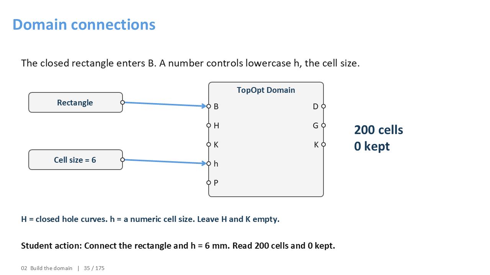
Connection list
- Rectangle → Domain B
- Cell-size slider → Domain h
Component reference: Domain
STEP 02 / CLASSROOM SLIDE 39
Shared domain data
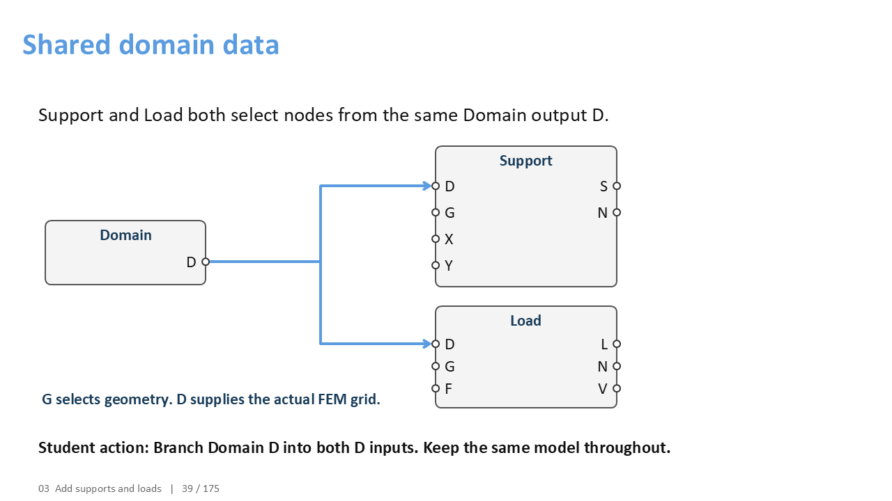
Connection list
- Domain D → Support D
- Domain D → Load D
STEP 03 / CLASSROOM SLIDE 40
Left-edge support
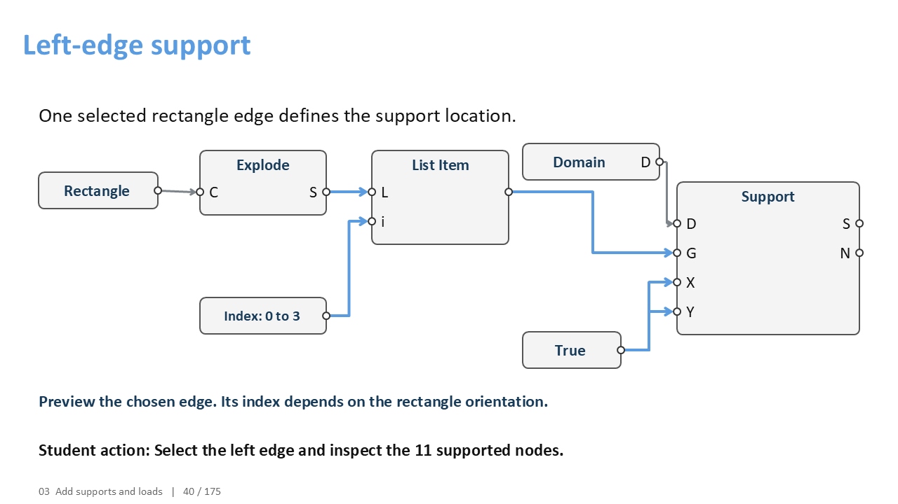
Connection list
- Rectangle → Explode C
- Explode S → List Item L
- Index slider → List Item i
- List Item → Support G
- Domain D → Support D
- True → Support X
- True → Support Y
STEP 04 / CLASSROOM SLIDE 41
A movable load point
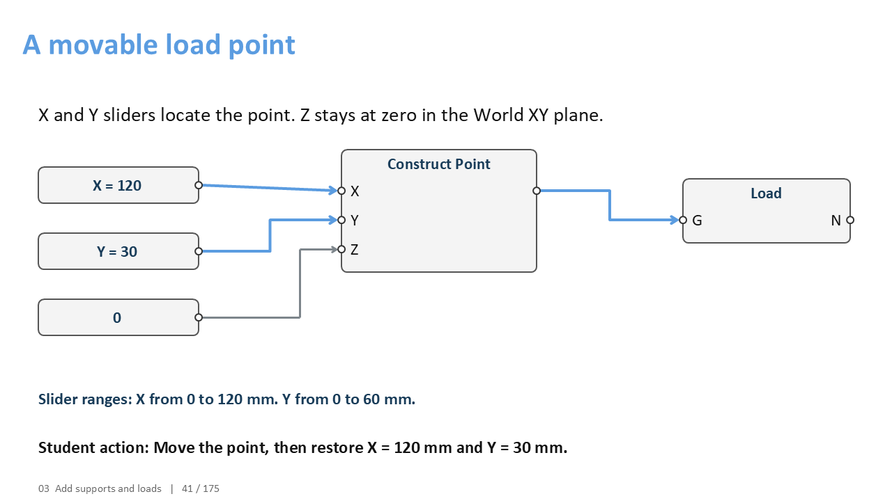
Connection list
- X slider → Construct Point X
- Y slider → Construct Point Y
- Zero → Construct Point Z
- Construct Point → Load G
Component reference: Load
STEP 05 / CLASSROOM SLIDE 42
Load position and force
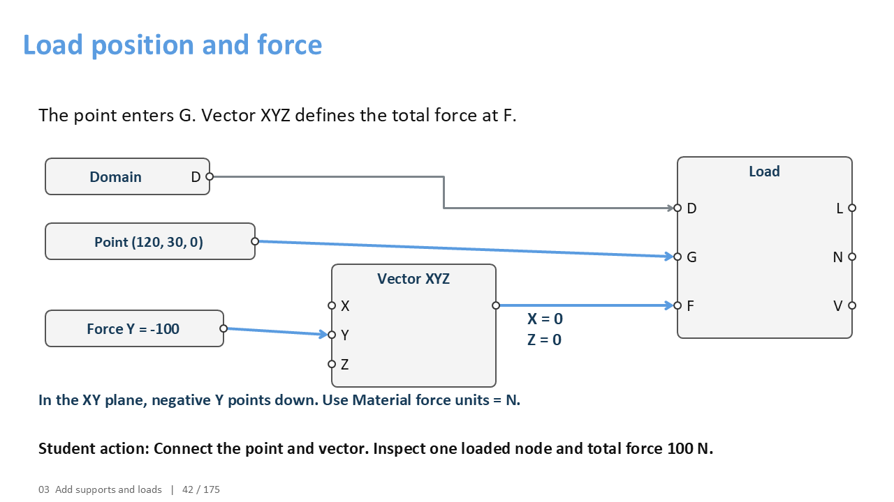
Connection list
- Domain D → Load D
- Construct Point → Load G
- Force Y slider → Vector XYZ Y
- Vector XYZ → Load F
STEP 06 / CLASSROOM SLIDE 47
Baseline solver connections
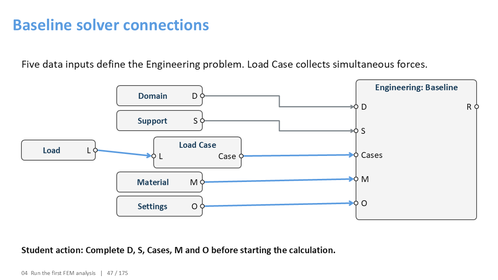
Connection list
- Domain D → Baseline Engineering D
- Support S → Baseline Engineering S
- Load L → Load Case L
- Load Case Case → Baseline Engineering Cases
- Material M → Baseline Engineering M
- Settings O → Baseline Engineering O
Component reference: Domain · Settings · Engineering · Load Case · Load · Material · Support
STEP 07 / CLASSROOM SLIDE 48
Baseline calculation controls
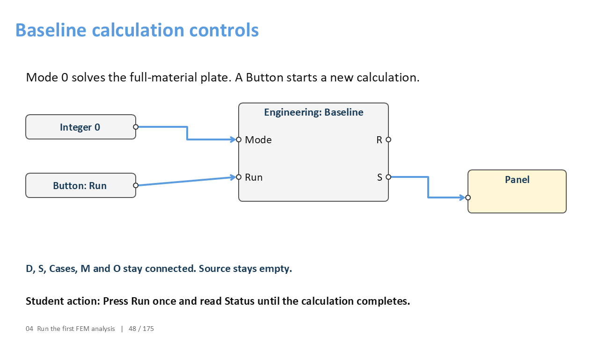
Connection list
- Mode control → Baseline Engineering Mode
- Run button → Baseline Engineering Run
- Baseline Engineering S → Status panel
Component reference: Engineering
STEP 08 / CLASSROOM SLIDE 49
Baseline results
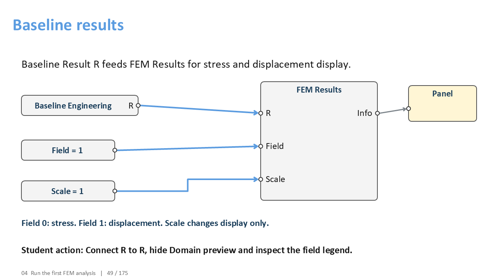
Connection list
- Baseline Engineering R → FEM Results R
- Field control → FEM Results Field
- Scale control → FEM Results Scale
- FEM Results Info → Panel
Component reference: Engineering · FEM Results
STEP 09 / CLASSROOM SLIDE 56
Optimisation connections
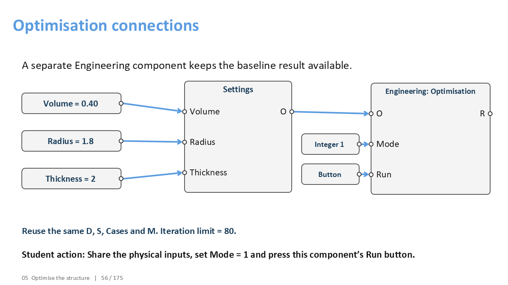
Connection list
- Volume control → Settings Volume
- Radius control → Settings Radius
- Thickness control → Settings Thickness
- Settings O → Optimisation Engineering O
- Mode control → Optimisation Engineering Mode
- Run button → Optimisation Engineering Run
Component reference: Settings · Engineering
STEP 10 / CLASSROOM SLIDE 57
Density results
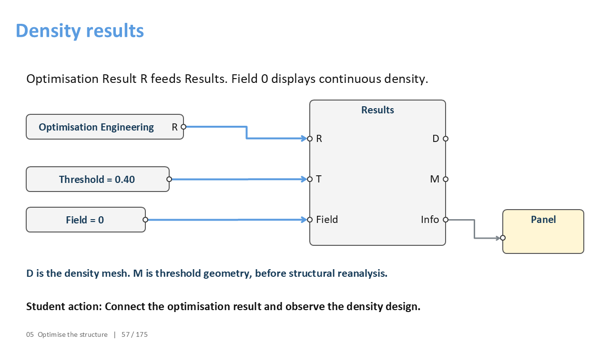
Connection list
- Optimisation Engineering R → Results R
- Field control → Results Field
- Threshold control → Results T
- Results Info → Panel
Component reference: Engineering · Results
STEP 11 / CLASSROOM SLIDE 63
Verification source
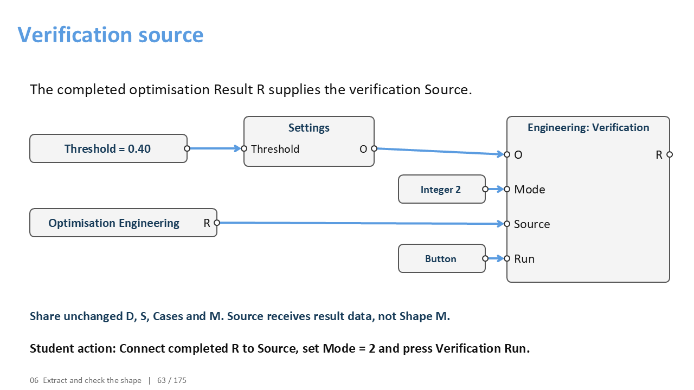
Connection list
- Optimisation Engineering R → Verification Engineering Source
- Threshold control → Settings Threshold
- Settings O → Verification Engineering O
- Mode control → Verification Engineering Mode
- Run button → Verification Engineering Run
Component reference: Settings · Engineering
STEP 12 / CLASSROOM SLIDE 64
Verification results
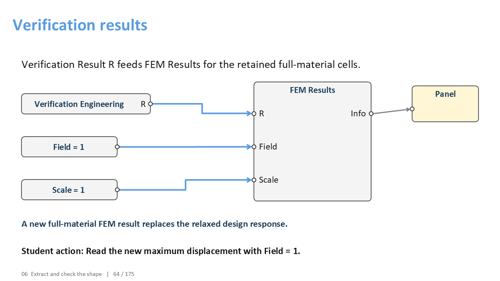
Connection list
- Verification Engineering R → FEM Results R
- Field control → FEM Results Field
- Scale control → FEM Results Scale
- FEM Results Info → Panel
Component reference: Engineering · FEM Results
STEP 13 / CLASSROOM SLIDE 65
Baseline comparison
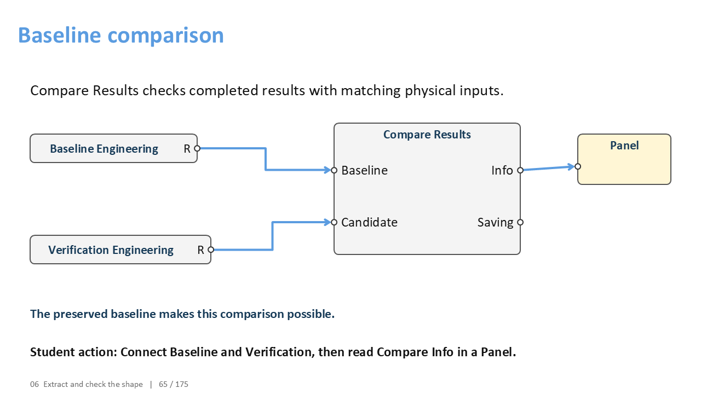
Connection list
- Baseline Engineering R → Compare Results Baseline
- Verification Engineering R → Compare Results Candidate
- Compare Results Info → Panel
Component reference: Compare Results · Engineering
STEP 14 / CLASSROOM SLIDE 70
Roof supports and model inputs
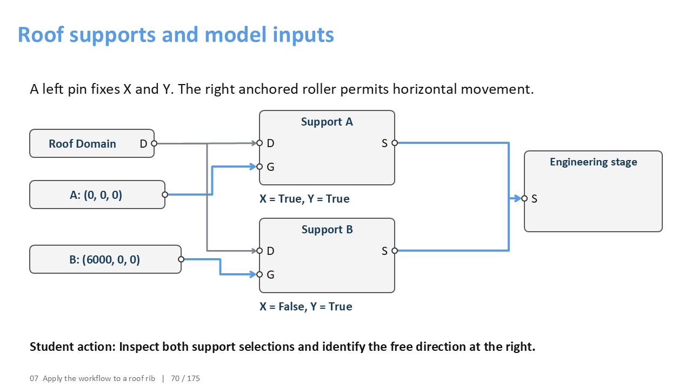
Connection list
- Domain D → Support A D
- Domain D → Support B D
- Left point → Support A G
- Right point → Support B G
- Support A S → Engineering stage S
- Support B S → Engineering stage S
STEP 15 / CLASSROOM SLIDE 71
Roof load cases
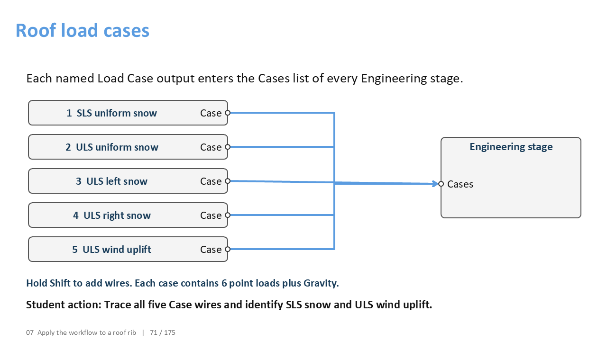
Connection list
- Load Case 1 Case → Engineering stage Cases
- Load Case 2 Case → Engineering stage Cases
- Load Case 3 Case → Engineering stage Cases
- Load Case 4 Case → Engineering stage Cases
- Load Case 5 Case → Engineering stage Cases
Component reference: Load Case · Engineering
STEP 16 / CLASSROOM SLIDE 72
Gravity in a load case
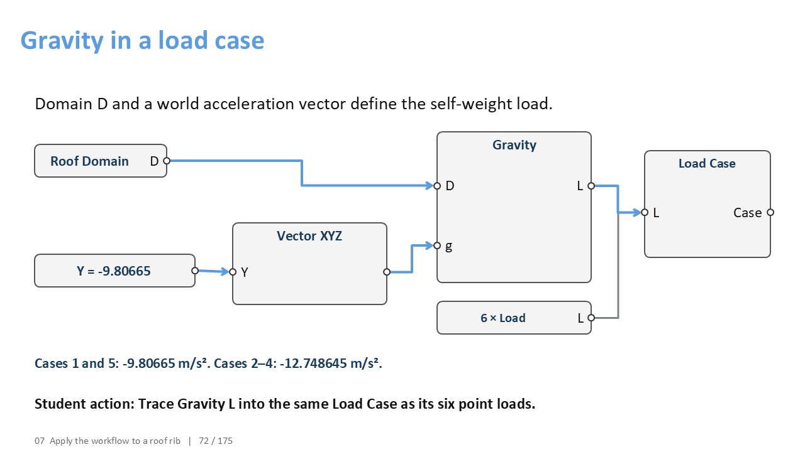
Connection list
- Domain D → Gravity D
- Y acceleration control → Vector XYZ Y
- Vector XYZ → Gravity g
- Gravity L → Load Case L
- Six Load components L → Load Case L
STEP 17 / CLASSROOM SLIDE 73
Three roof calculation stages
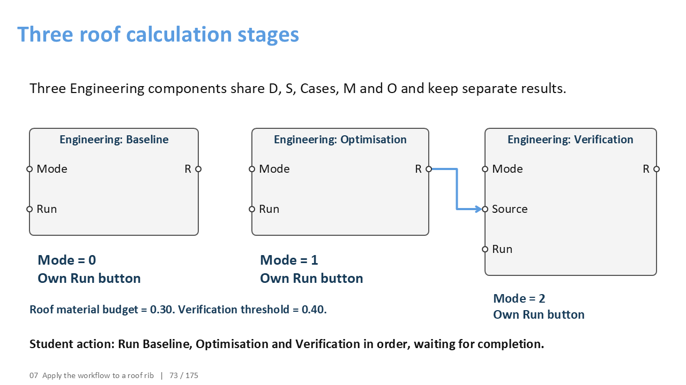
Connection list
- Optimisation Engineering R → Verification Engineering Source
Component reference: Engineering
STEP 18 / CLASSROOM SLIDE 74
Roof case and field selection
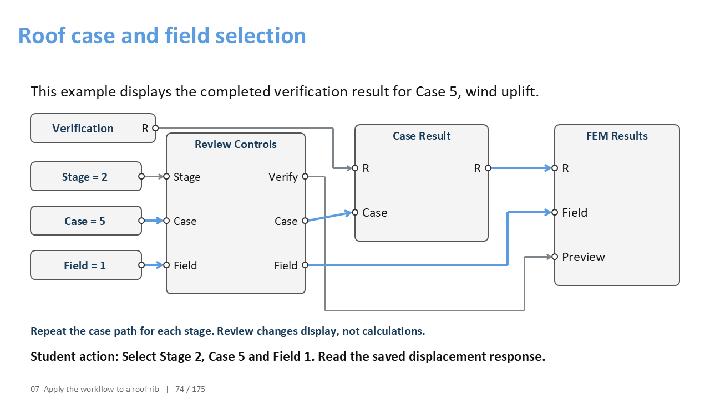
Connection list
- Verification Engineering R → Case Result R
- Stage control → Review Controls Stage
- Load Case → Review Controls Case
- Field control → Review Controls Field
- Review Controls Case → Case Result Case
- Case Result R → FEM Results R
- Review Controls Field → FEM Results Field
- Review Controls Verify → FEM Results Preview
Component reference: Case Result · Engineering · Load Case · Review Controls